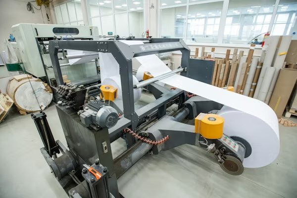
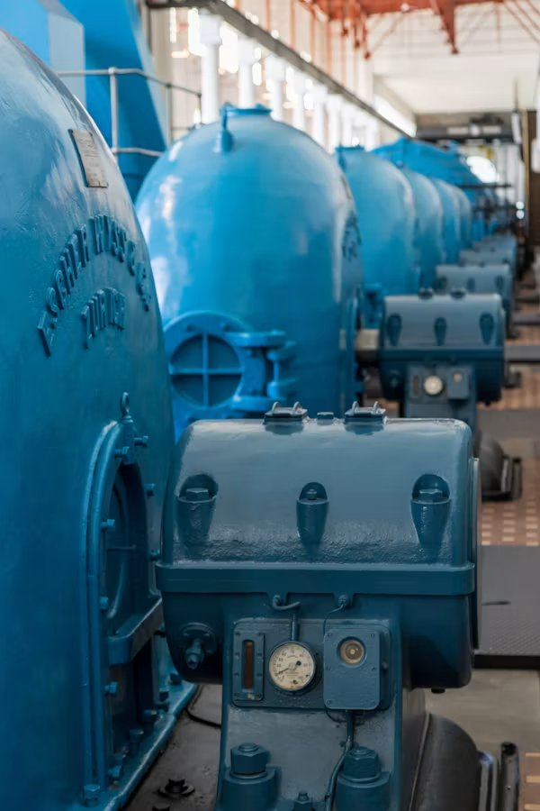
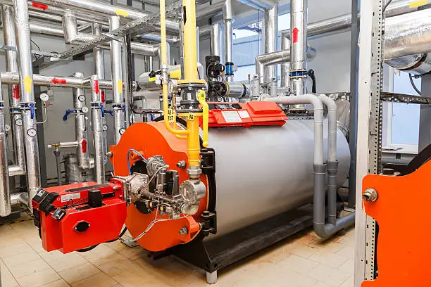
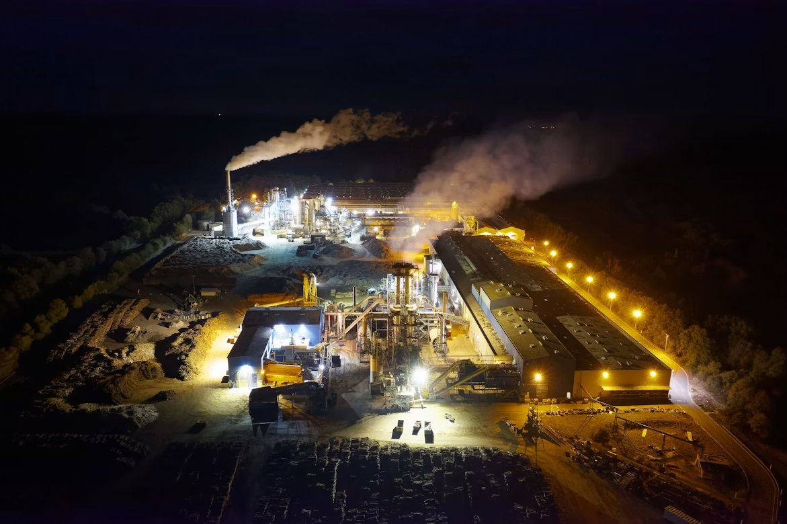

Six Industries. One Common Problem. One Company That Solved It.
Across every industry below, the fundamental challenge is the same: complex process dynamics, volatile energy markets, and the inherent limitations of human operators create a persistent gap between operational reality and economic potential. DES closes that gap, with verified, documented results.

Industrial & Utility Powerhouses
Multi-fuel boilers, steam distribution networks, co-generation systems, gas turbines, and campus powerhouses — environments where a single percentage point of efficiency improvement is worth millions annually, and where DES has delivered exactly that. Average documented daily savings: $25,000 per day in natural gas costs at a single Alberta utility facility.
Request Evaluation for This Sector →
Pulp & Paper
Recovery boilers, digesters, evaporators, brown stock washing, and bleaching — processes operating under relentless fuel price pressure and environmental scrutiny. DES is the technology that reduced total pulp production costs by 2.5% at a major Western Canadian facility, a result translating to over $560,000 per month in combined fuel and power savings.
View Pulp & Paper Results →
Oil, Gas & Petrochemicals
Synthetic crude production, refining, and chemical processing — environments where energy intensity is extreme and the financial consequences of sub-optimal control scale proportionally. At OPTI Canada's Long Lake Project, DES Advanced Control reduced energy costs by $11.2 million annually. That is not a pilot result. It is operational performance.
View Oil & Gas Results →
Chemicals & Polymers
Reactors, distillation columns, and complex multi-unit chemical processes where variability management and constraint-aware control deliver consistent yield improvements, product quality enhancements, and reduced energy intensity — often simultaneously. DES's constraint-first architecture is precisely suited to the regulatory and safety demands of chemical manufacturing.
Request Evaluation for This Sector →
Mining & Steel
Preliminary audits at Canadian steel and mining operations have identified significant optimization potential — validating DES's applicability beyond its most established deployment sectors. The fundamental challenge is identical: complex process dynamics, significant energy costs, and the inherent limits of human control. The solution is the same.
Request Evaluation for This Sector →Large Commercial & Marine
Building and campus environmental systems, chiller plants, HVAC load shedding, and marine applications — wherever complex multi-unit systems demand intelligent, real-time coordination. DES technology scales from the powerhouse to the campus — applying the same autonomous optimization discipline to commercial energy systems with significant cost and sustainability impact.
Request Evaluation for This Sector →We Don't Just Understand These Processes. We've Optimized Them.
DES professionals have not modeled these processes in simulation environments. They have run them, controlled them, and optimized them in the field, which is why our technology performs where others fail.
Multi-Level Steam Systems
Continuous optimization of steam generation, distribution, letdown, and consumption across multiple pressure levels and process consumers — maximizing thermodynamic efficiency and economic output while balancing every steam header autonomously.
Multi-Fuel & Power Boilers
Intelligent real-time fuel switching and blending across biomass, natural gas, fuel oil, and waste fuels — observing availability constraints, pricing differentials, and environmental limits simultaneously through the patented MultiMaxx platform.
Multiple Boiler Coordination
Economic loading distribution across multiple boilers with differing efficiency curves, capacities, and fuel capabilities — ensuring the system always generates steam at the lowest marginal cost regardless of demand fluctuations.
Cogeneration & Gas Turbines
Simultaneous optimization of heat and power generation — dynamically adjusting to live electricity market prices and thermal demand signals to maximize the economic value of every BTU processed through the cogeneration system.
Recovery Boilers & Lime Kilns
Specialized control for the demanding combustion dynamics of recovery and power boilers in pulp and paper applications, where chemical recovery, steam generation, and combustion stability must be optimized concurrently without compromise.
Multiple Chiller Plants
Economic staging and loading of multiple chillers with varying efficiency curves — minimizing electrical consumption while maintaining all thermal comfort and process cooling requirements across variable load conditions and real-time pricing environments.
Digesting, Bleaching & Washing
Advanced control for pulp processing sequences — reducing chemical and energy consumption, improving yield consistency, and coordinating production rates across interconnected process units with the precision that manual coordination cannot sustain.
Waste-Heat Recovery Systems
Maximum extraction of economic value from waste heat streams — integrating waste-heat recovery into the broader facility energy balance and ensuring every recoverable BTU contributes to the facility's economic optimum.
Seven Distinct Services. One Integrated Platform.
DES services address specific, identifiable sources of operational underperformance. They can be deployed individually or as an integrated platform — depending on where your facility's greatest opportunities lie and what your engineering timeline allows.
Project Justification & Detailed Engineering Audits
Before a dollar is committed, we quantify exactly what DES can deliver — specific to your facility, your processes, and your energy markets. The audit is precise enough to build a business case and accurate enough to hold us accountable to the results it predicts.
Real-Time Demand Response (OptiMaxx)
Automatic facility reconfiguration in response to live market price signals — capturing every economic window that real-time pricing creates, before human operators have finished recognizing it exists.
Energy Management & Reporting Systems (EMRS)
Continuous, constraint-aware optimization of every fuel, every boiler, and every steam consumer in your facility — driving you to economic optimum every second, automatically, without requiring operator intervention.
Opportunistic Optimization Control
A constant autonomous driving force toward economic optimum that captures transient market and process opportunities the moment they arise — maintaining the best achievable position until conditions change.
Variability Management Services
Systematic elimination of the process variability that degrades product quality, accelerates equipment wear, and forces conservative operating targets that leave real economic capacity unused.
Coordinated Operations Services
Single-knob production control that aligns related process units and eliminates shift-to-shift variability in operator technique, creating consistent, economically predictable facility performance regardless of who is on shift.
Combustion Control Services
Maximum thermal efficiency, complete combustion, and continuous regulatory compliance — eliminating excess air losses, flame instability, and the manual vigilance that combustion optimization currently demands of your operators.